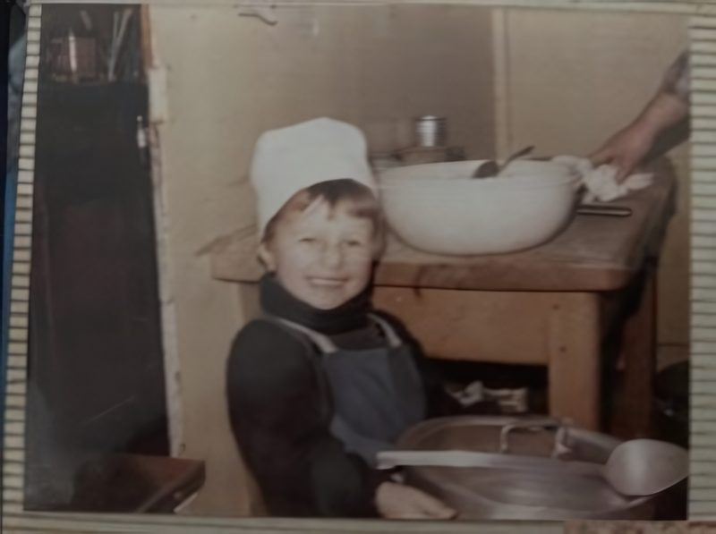

Dessert in jarFramboise chérie, Citron ma passion, Chocolat mon amourShop all dessert in jar
Fourth generation100% plant-based
Romuald Guiot, fourth generation. Every pastry from plants.
Chef Romy trained at La Maison de Marc Veyrat, three Michelin stars, opened La Mirabelle in New York and reached the final of Food Network’s Spring Baking Championship. At 169 W Green St he makes French pâtisserie with no animal products at all, and guests are often surprised to learn it.
Pickup at 169 W Green St: choose the day and the time, and it is boxed for then.
Delivery runs on Uber Eats, DoorDash and Grubhub today, through the shop’s menu app. Shelf gifts also ship in the US.
Slots close themselves when the kitchen is fullEarliest slot
3 starsMichelin, at La Maison de Marc Veyrat
2015moved to the US, opened La Mirabelle
Season 8Spring Baking Championship finalist
4.7on Yelp from about 280 reviews
Plant-based, said quietly.
French craft first, the plants second. Customers are often surprised to learn everything is vegan, the chef told Flaunt.
The croissants are laminated with plant butter. The éclairs, the macarons and the cakes are made with no animal products, like everything else in the vitrine.
“French style plant-based bakery and salon de thé, specializing in éclairs.”
The shop’s own profile on Yelp
“Precision and artistry.”
The same profile on Yelp
“The first French Vegan Pastry Shop in Los Angeles.”
The shop’s About page
“A love letter you can eat.”
The shop’s Instagram, on custom cakes
From a grandfather’s restaurant to Green Street.
Nine steps, with a link to each story.
The start
The fourth generation
Romuald Guiot comes from a family of pastry cooks. The shop’s blog tells the beginning: a grandfather’s restaurant and a blue apron.

From the shop’s archive.Source: the shop’s blog on id-eclair.com
France
La Maison de Marc Veyrat
Training in the kitchen of La Maison de Marc Veyrat, a three-Michelin-star house.
Eater LA reports a French bakery and a wine bar coming to West Green Street, and asks the chef his favourite pastry. The éclair, he says, for how well it travels and how many ways it can go.
Afternoon tea is the third service on Green Street: a spread of small pastries and savory bites with teas from Palais des Thés, also listed as Tea Time for Two. Reviewers single out the 6 am opening, the décor and the dishes, the outdoor tables, the welcome for dogs, and a staff that commits fully to the French theme.
Romuald Guiot, known as Chef Romy, a fourth-generation pastry chef. He trained at La Maison de Marc Veyrat, opened La Mirabelle in New York in 2015 and was a finalist on Season 8 of Food Network’s Spring Baking Championship.
Is everything at iD Éclair vegan?
Yes. Every pastry in the vitrine is plant-based, and the shop says it quietly: guests are often surprised to learn it, the chef told Flaunt. See the menu.
When did iD Éclair open?
In December 2024, at 169 W Green St in Old Pasadena, with La Cave next door at 163.
Does iD Éclair give back to Pasadena?
Yes. After the Eaton Fire the shop gave éclairs away, and its daily leftovers now go to Friends In Deed in Pasadena, as Friends In Deed reported in April 2025.
Start where he does: the éclair.
Chocolate or pistachio at $6.50 and the chef’s special at $9.00, on the counter today. Order ahead and they are boxed for the time you choose at 169 W Green St.